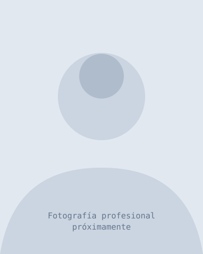

Desarrollo Web
Sitios web profesionales, landing pages, catálogos y sistemas web para tu negocio.
Presencia digital sólida que capta clientes las 24 horas.
Desarrollo sistemas, aplicaciones y soluciones digitales a medida para ayudar a tu negocio a vender más y administrarse mejor: puntos de venta, inventarios, ventas, clientes, reportes y más.
min para el corte de caja (antes: 2 horas)
menos mermas de inventario en el primer mes
más inscripciones con presencia digital
segundos para reportes gerenciales (antes: 30 min)
No vendo código: desarrollo herramientas que optimizan tiempo, reducen errores y mejoran la administración de tu negocio.
Sitios web profesionales, landing pages, catálogos y sistemas web para tu negocio.
Presencia digital sólida que capta clientes las 24 horas.
Sistemas para ventas, inventarios, clientes, proveedores, caja y reportes.
Centraliza tu operación y toma decisiones basadas en datos reales.
Puntos de venta personalizados y ágiles para tu negocio.
Agiliza tus cobros y mantén el control de tu caja sin complicaciones.
Diseño, optimización y mantenimiento de SQL Server y PostgreSQL.
Información segura, estructurada y de acceso rápido siempre.
Soluciones adaptadas específicamente a los procesos de tu empresa.
El software se adapta a ti, no tú al software.
Corrección de errores, optimización y desarrollo de nuevas funcionalidades.
Tu sistema siempre actualizado y evolucionando con tu negocio.
¿No ves el servicio exacto que necesitas? Cuéntamelo y lo construimos a medida.
Hablemos de tu idea¿En cuál de estos estás?
Toca uno y el formulario se llena solo con tu tipo de proyecto.
Casos reales de problemas empresariales resueltos mediante software.

Problema: El negocio necesitaba centralizar operaciones de ventas, inventario y administración en múltiples sucursales.
Solución: Sistema POS capaz de gestionar productos, variantes, inventario, caja y reportes gerenciales.

Problema: El gimnasio no tenía presencia digital y dependía solo de recomendaciones locales para conseguir clientes.
Solución: Sitio web responsivo con planes, horarios, galería y formulario de inscripción con confirmación automática.

Problema: Información histórica dispersa en hojas de cálculo y bases antiguas, con reportes que tardaban más de 30 minutos.
Solución: Migración a SQL Server con esquema normalizado, índices optimizados y vistas para reportes en tiempo real.

Problema: Las facturas se emitían a mano, con errores de cálculo, documentos duplicados y retrasos de hasta 2 días.
Solución: Aplicación de facturación con catálogo de productos, validación automática de montos y generación de PDF.
Un proceso estructurado para garantizar resultados desde la primera reunión hasta la entrega.
El cliente explica qué necesita y cuáles son los dolores actuales de su negocio.
Analizo los requerimientos técnicos y comerciales para proponer la solución más viable.
Definimos alcance, funcionalidades clave, presupuesto y tiempos de entrega.
Construyo la solución mostrando avances periódicos para asegurar que estamos alineados.
Validamos exhaustivamente que cada módulo funcione correctamente bajo escenarios reales.
Implementación del proyecto terminado y entrega de la documentación necesaria.
Ofrezco mantenimiento, soporte técnico y desarrollo de futuras mejoras escalables.
Cada costo se calcula con las horas de desarrollo que realmente requiere tu proyecto. Sin sorpresas.
Desarrollo Web
Página de una sola vista para captar clientes y canalizarlos a WhatsApp o redes.
Sitio completo con secciones profesionales, blog o catálogo dinámico de productos.
Tienda en línea con carrito, catálogo y cobros con Stripe o Mercado Pago.
Automatización y Datos
Automatiza tareas repetitivas y procesamiento de datos con APIs o archivos.
Sistemas a la Medida
Software administrativo con base de datos SQL Server: gestión, inventarios o paneles.
Múltiples roles, permisos, automatizaciones y reportes avanzados con integración de APIs.
¿Tu caso no está aquí? Cuéntame qué necesitas y te cotizo sin compromiso en menos de 24 horas.
Pedir cotización personalizada
Soy desarrollador de software freelance especializado en crear soluciones digitales funcionales y adaptadas a cada negocio. He trabajado en sistemas de punto de venta, inventarios, ventas, administración, catálogos, aplicaciones web y de escritorio — siempre con el mismo objetivo: traducir lógicas de negocio complejas en sistemas eficientes, seguros y fáciles de utilizar.
Resultados reales de negocios que ya trabajan conmigo.
Aquí va el testimonio real del cliente: qué problema tenía su negocio, cómo trabajamos juntos y qué nota del cambio. P. ej.: "El corte de caja que antes me tomaba dos horas ahora me toma cinco minutos y ya no pierdo producto por descontrol de inventario."
Mejora medible: -40% mermas de inventarioAquí va el segundo testimonio real. Ideal si el primero fue un sistema (POS/facturación) y este es una web o migración, para cubrir ambos mundos.
Mejora medible: reportes en 5 segundos¿Trabajaste conmigo o quieres ser el primero en empezar? Cuéntame tu proyecto y agendamos una consulta inicial sin compromiso. Respuesta en menos de 24 horas.
Respuestas a lo que más preguntan mis clientes antes de contratar.
Una landing page o sitio web informativo se entrega en 1 a 2 semanas. Los sistemas a medida (POS, inventarios, facturación) van de 4 a 8 semanas según el número de módulos; durante el desarrollo te muestro avances periódicos para que nunca pierdas el ritmo.
El precio depende del alcance: cantidad de módulos, complejidad de los procesos y tiempo estimado. Después de una consulta breve te entrego una cotización por escrito, cerrada y sin costo, para que no haya sorpresas a mitad del proyecto.
Sí. Todo sistema incluye 1 mes de soporte técnico gratuito. Después puedes contratar el plan de mantenimiento mensual, que incluye respaldos, actualizaciones y soporte prioritario por WhatsApp.
No es obligatorio. Te asesoro sobre qué hosting y dominio conviene a tu negocio, y en los sistemas de escritorio solo necesitas una computadora. Si lo prefieres, incluyo la instalación y configuración de todo en el servicio.
Por supuesto. Trabajo con entregas parciales y revisiones contigo en cada etapa: así validamos juntos que el sistema cumpla lo acordado y se evitan malentendidos al final.
Ningún problema. Empezamos probando, y conforme crece tu negocio agregamos módulos nuevos. Se cotizan como mejoras (con precio preferente si tienes el mantenimiento activo) y se integran sin afectar lo que ya funciona.
Cuéntame qué necesitas y encontremos una solución tecnológica que impulse tu negocio. Te respondo en menos de 24 horas.
Hablemos de tu proyecto¿Listo para digitalizar tu negocio? Escríbeme y agendemos una consulta inicial.